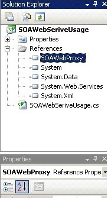

No
How to Use a Web Service or Remote Service using SOA Infrastructure?
This example illustrates how to use a web service or remote service using SOA infrastructure. The example is a very simple one which can be modified to have a more practical scenario.
PROCEDURE
NAMESPACE USED
System
System.Web
System.Web.Services
System.Web.Services.Protocols
Create a New Web Service
- On the Windows Start menu, point to All Programs, and then click Microsoft Visual Studio. The Visual Studio Start Page appears.
- In the File menu, point to New, and then click Web Site. The New Web Site dialog box appears.
- In the Templates pane, select ASP.NET Web Service. This is selected by default, and you can retain the default.
- Enter a name for the website by changing the default name in the Location text box, for example, M:\Work\WebSite8. You can retain the default selection of File System in the Location drop down.
- Click OK.
Sample Code for creating Web serviceusing System;
using System.Web;
using System.Web.Services;
using System.Web.Services.Protocols;
[WebService(Namespace = "http://skeltaSoa.org/")]
[WebServiceBinding(ConformsTo = WsiProfiles.BasicProfile1_1)]
public class Service : System.Web.Services.WebService
{
public Service ()
{
//Uncomment the following line if using designed components
//InitializeComponent();
}
[WebMethod]
public string SkeltaTest()
{
return "This is my SketlaTest";
}
}
Creating a Web Site
Complete the following steps to create a web site to host the created web service:
- Open IIS Manager.
- For Windows Server 2012, on the Start page click the Server Manager tile, and then click OK. In the Server Manager, click the Tools menu, and then click Internet Information Services (IIS) Manager.
- For Windows 8.1, on the Start page type Control Panel, and then click the Control Panel icon in the search results. On the Control Panel screen, click System and Security, click Administrative Tools, and then click Internet Information Services (IIS) Manager.
- In the Connections pane, right-click the Sites node in the tree, and then click Add Website.
- In the Add Website dialog box, enter a friendly name for your website in the Site name box.
- If you want to select a different application pool than the one listed in the Application Pool box, click Select. In the Select Application Pool dialog box, select an application pool from the Application Pool list and then click OK.
- In the Physical path box, enter the physical path of the website's folder, or click the browse button to navigate the file system to find the folder.
- If the physical path that you entered in the previous step is to a remote share, click Connect as to specify credentials that have permission to access the path. If you do not use specific credentials, select the Application user (pass-through authentication) option in the Connect As dialog box.
- Select the protocol for the website from the Type list.
- If you must specify a static IP address for the website (by default, this is set to All Unassigned), enter the IP address in the IP address box.
- Enter a port number in the Port text box.
- Optionally, enter a host header name for the website in the Host Header box.
- If you do not have to make any changes to the site, and you want the website to be immediately available, select the Start Web site immediately check box.
- Click OK.
Creating Proxy dll
We have to create a Proxy dll since the proxy does all the marshalling and serialization/deserialization of parameters and returns to/from a web service.
Creating proxy dll using WSDL
Create the proxy class of the web service using the WSDL tool. Use the wsdl.exe utility to generate code for XML web service clients and XML web service using ASP.NET from WSDL contract files, XSD schemas, and discomap discovery documents. This tool can be used in conjunction with disco.exe.
In Visual Studio Command Prompt, run the following command:
C:\Program Files\Microsoft Visual Studio\VC> wsdl /namespace:SkeltaSOAWebProxy http://localhost:1508/WebService_New/MyWebService.asmx?wsdl
Creating proxy dll using CSC command
- Create DLL using CSC command.
- Create a new project 'SOAWebServiceUse'.
- Right-click 'SOAWebServiceUse' project which created and click Add Reference.
- Add reference 'SkeltaSOAService.Dll' to use.
Step 3: Place this compiled proxy class in the dll and refer the same from where you want to access the Web Service.
Create a .net Assembly to consume the Web Service method.
using System;
using System.Collections.Generic;
using System.Text;
using SOAWebProxy;
namespace SOAWebSeriveUsage
{
public class SOAWebSeriveUsage
{
public SOAWebSeriveUsage() { }
public string GetWebServiceData()
{
SOAWebProxy.Service ser = new SOAWebProxy.Service();
return ser.SkeltaTest();
}
}
}
Do not forget to add the Proxy.dll in the reference.

Figure - Solution Explorer
Adding New SOA Folder
The very basic component of SOA repository is the Folder. Basically you need to register a folder to consume the assemblies from the folder. Add the reference folder into the SOA Folders.
Adding new folder in the SOA Folder option:
- Go to Start > All Programs > AVEVA > AVEVA Work Tasks > Central Configuration.
- Go to AVEVA Work Tasks Repository List.
- Click Site Path from which you would like to login to the repository. This redirects to the AVEVA Work Tasks Enterprise Portal.
- Click arrow button to enter into the Enterprise Console.
- In the Enterprise Console, enter the User Name and Password. Click the icon next to the Password field to login.
- From the Enterprise Console menu, select Tools > SOA Assembly.
- In the ribbon bar, click New Folder.
- In the Title text box, enter the folder name as 'MySkeltaTest'.
- In the Description text area, enter a description for the folder.
- In the Physical Path text box, enter the physical path to verify the presence of the assembly using the view assembly option.
- Click Verify Assemblies.
- Click Save.
Adding Assembly
There are two options to add assembly into the SOA repository i.e. From GAC or From Assembly Folder.
To add an assembly in the SOA repository, choose the SOA > Assemblies option from the Enterprise Console.